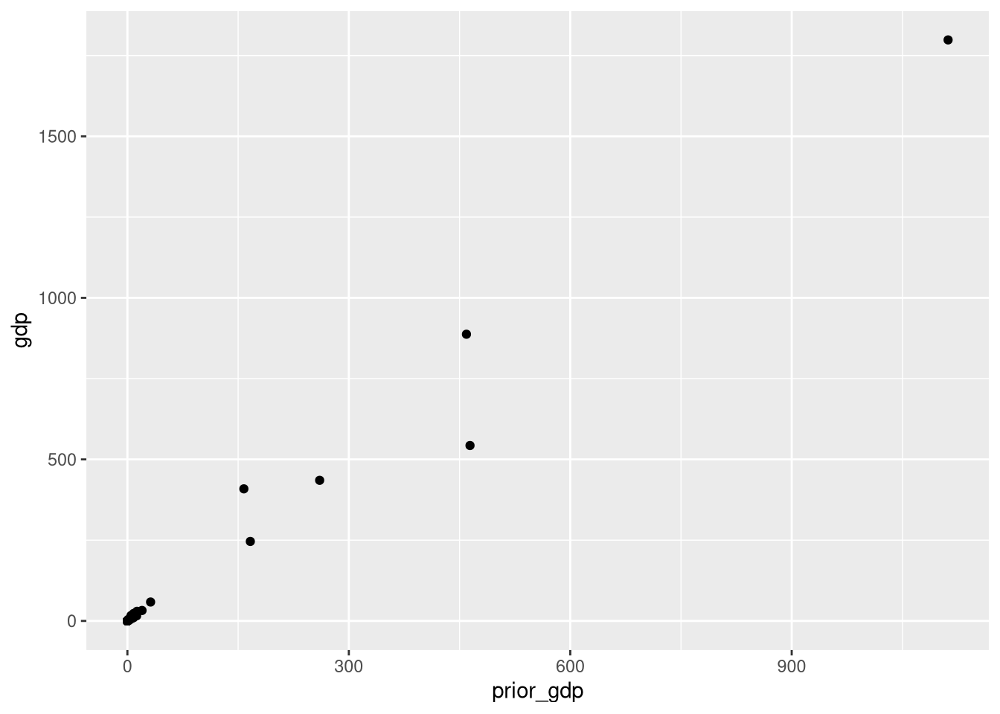
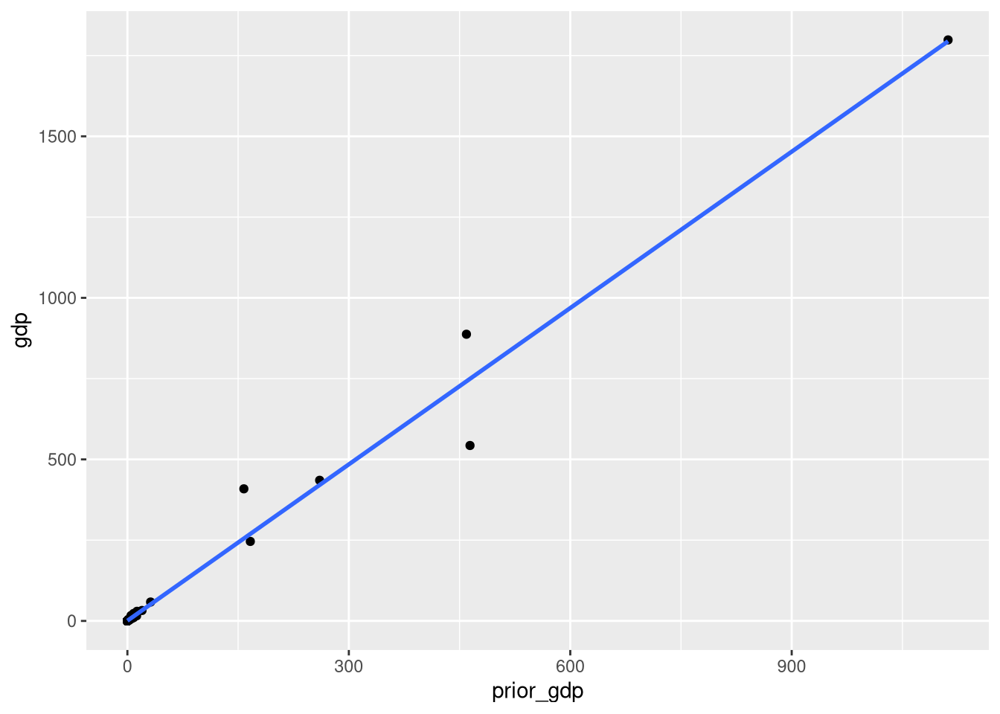
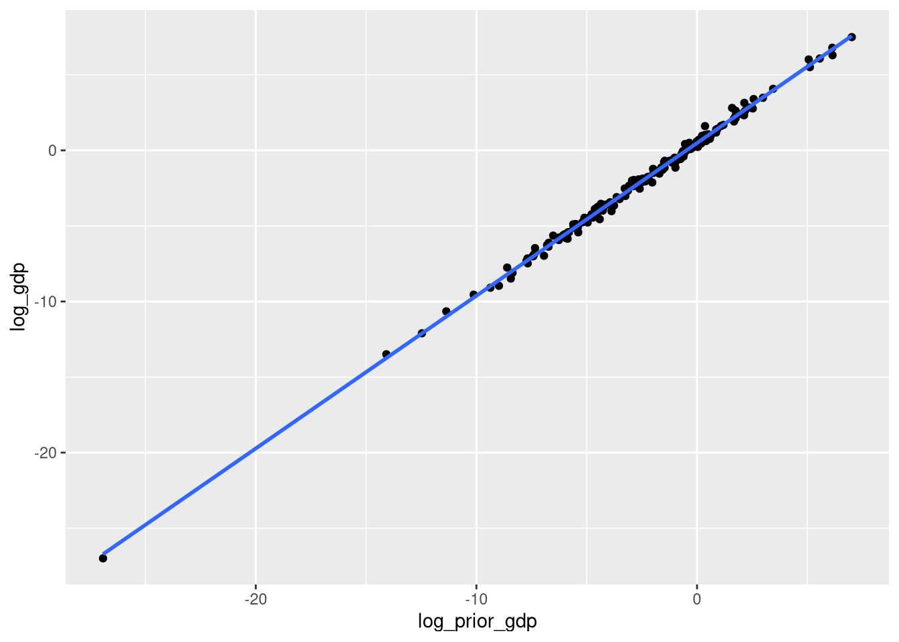
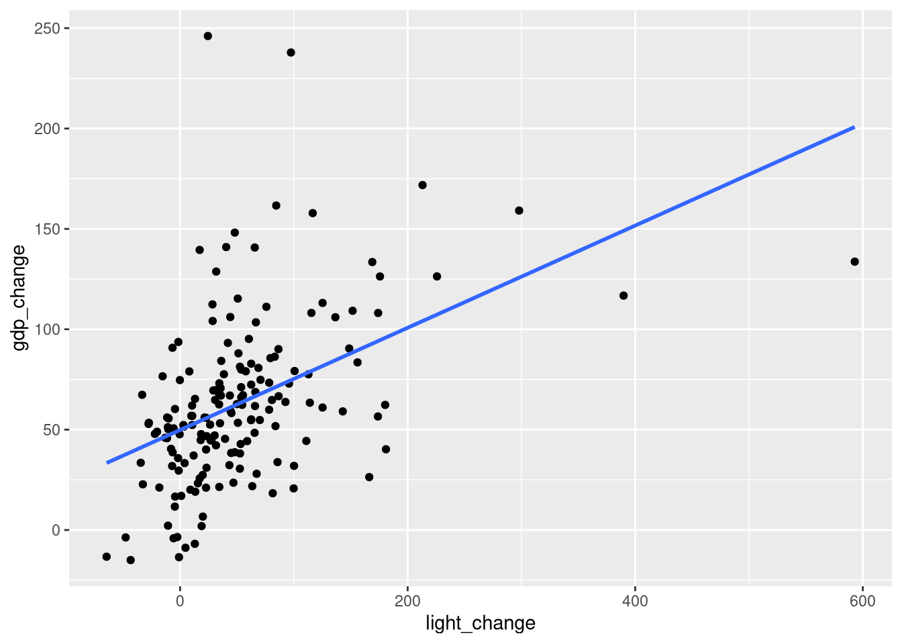

An applied course using the R programming language
Author
Affiliation
Jakob Hoffmann
Economic Geography Group, LMU Munich
Statistical modeling
When fitting statistical models, we do not content ourselves with just describing the data. Instead, we want to know about the (e.g., socioeconomic) processes that the data are a result of, i.e., the data generating process (DGP). The DGP is often too complex to reason about in its entirety, so instead we build heavily simplified models which nevertheless try to capture some of the DGPs main features. Statistical models are typically stochastic, i.e., they treat some of the variation in an observed outcome of interest as random. Statistical models are always informed by data, i.e. they have components (e.g., parameters) that are unknown to begin with but which can be learned from data.
Linear regression models
Introducing the data
The most common and widely used class of statistical models are linear models or linear regression models. The goal of linear regression is to predict an outcome variable of interest from one or more predictor variables. In the following, we will walk through the case study presented in Llaudet & Imai (2024) and attempt to predict the GDP of a country by the amount of light that it emenates at night, as visible from space. We will start with something simpler, though: predicting current GDP from previous GDP. As economic development is highly path dependent, the previous economic situation should be very informative for the subsequent economic situation.
Before we start discussing the model, let’s look at the data:
# A tibble: 170 × 5
country gdp prior_gdp light prior_light
<chr> <dbl> <dbl> <dbl> <dbl>
1 USA 11.1 7.37 4.23 4.48
2 Japan 543. 464. 11.9 11.8
3 Germany 2.15 1.79 10.6 9.70
4 China 16.6 4.90 1.45 0.735
5 UK 1.10 0.754 11.9 13.4
6 France 1.58 1.21 8.51 6.91
7 Albania 0.502 0.231 2.03 0.414
8 Algeria 0.324 0.212 0.487 0.473
9 Angola 0.00354 0.00147 0.0541 0.0327
10 Antigua and Barbuda 0.00191 0.00112 11.9 8.77
# ℹ 160 more rows
The data frame contains 5 columns: The country, GDP in the period 2005 to 2005 in trillions of local currency (gdp), GDP in the period 1992 to 1993 (prior_gdp), and the light emissions in those two periods (on a scale from 0 to 63).
With this, we can make a scatter plot of previous against subsequent gdp:
ggplot(dat, aes(prior_gdp, gdp)) +geom_point()

We see a clear linear relationship, but we also see that most observations are bunched at lower GDP values. We will address this at a later point. Our goal for now is to find a model which summarizes this relationship.
One apprach is to fit a line to these data so that the observed data are scattered around this line as closely as possible. We can get such a line directly via ggplot using geom_smooth():
ggplot(dat, aes(prior_gdp, gdp)) +geom_point() +geom_smooth(method ="lm", se =FALSE)
`geom_smooth()` using formula = 'y ~ x'

Formulating and fitting the linear model
The linear model responsible for this line relates an outcome variable \(Y\) (here subsequent GDP) to a predictor variable \(X\) (here previous GDP) through a line equation and an error term:
\[
Y_i = \alpha + X_i \beta + \epsilon_i
\]
Here, \(i\) indexes observations (i.e., countries) and \(\alpha\) and \(\beta\) are parameters determining the intercept and the slope of the line, respectively. The term \(\epsilon_i\) is the error term or residual for observation \(i\), i.e., the difference between the point on the line corresponding to \(X_i\) and the observed outcome \(Y_i\). The residual represents the fact that our model predictions are not perfect and captures unmodeled variation.
The parameters \(\alpha\) and \(\beta\) are unknown and need to be estimated from data. In R, we can fit the model and thus estimate the parameters with the lm() function (which ggplot also does in the background):
lm(gdp ~ prior_gdp, data = dat)
Call:
lm(formula = gdp ~ prior_gdp, data = dat)
Coefficients:
(Intercept) prior_gdp
0.7161 1.6131
The model specification makes use of R’s formula syntax using the tilde (~) operator to say that we should model gdp (the outcome) as a function of prior_gdp (the predictor). The output tells us that based on the given data, our best guesses at \(\alpha\) and \(\beta\), called \(\hat{\alpha}\) and \(\hat{\beta}\), are 0.72 and 1.61, respectively.
For \(\alpha\), which represents the y intercept of the line, this is the expected GDP given a previous GDP of 0 (i.e., when \(X_i = 0\)). This reveals that the intercept doesn’t always have a sensible interpretation – a prior GDP of 0 is not plausible. However, we still need it because without it the regression line would not be defined.
The coefficient \(\beta\) measures the slope of the line, i.e. by how much the outcome \(Y\) is expected to change when \(X\) is increased by 1. Based on this, a value of 1.61 tells us that we should expect GDP in the second period to be around 1.6 trillions higher when prior GDP is increased by 1 trillion.
Making predictions
Our best guess at subsequent GDP based on a given prior GDP is just the value on the fitted line, i.e.:
In R, we can predict the outcome for a set of input values using the predict() function. Let’s predict subsequent GDP for a range of previous GDPs:
# fit model and save to variablefit <-lm(gdp ~ prior_gdp, data = dat)# predictor values for which to predictpred <-data.frame(prior_gdp =c(0.1, 2, 10))predict(fit, pred)
1 2 3
0.8773981 3.9422822 16.8470575
So for a smaller country with a previous GDP of 0.1 trillion, we predict a subsequent GDP of 0.87, and for a large country (previous GDP of 10 trillion), we predict 17 trillion subsequent GDP.
Exercise
Predict the subsequent GDP for Germany and compare it to the actually observed subsequent GDP.
Variable transformations
We saw in the plot above that most of the countries are bunched together at lower GDP values. This is a result of the uneven distribution of GDP, with only a handful of countries having very large GDPs. It often makes sense to counteract this uneven distribution with some kind of variable transformation, such as the natural logarithm.
To apply such a transformation to our data, we just add two new variables to our data frame:
dat <- dat |>mutate(log_gdp =log(gdp),log_prior_gdp =log(prior_gdp),)
Plotting the regular and the transformed variables next to each other shows the difference in distribution:
We can also redo the scatter plot from before with the transformed data:
ggplot(dat, aes(log_prior_gdp, log_gdp)) +geom_point() +geom_smooth(method ="lm", se =FALSE)
`geom_smooth()` using formula = 'y ~ x'

The data are now much better visible and the linear relationship is still a very good approximation. We can also refit the model to the transformed data to again obtain the parameter estimates:
The coefficients are different now, and through the transformation their interpretation has changed. Especially for the \(\beta\) coefficient, there is a useful approximation: It tells us (approximately) the percentage change in the outcome associated with a 1% change in the predictor. That is, it describes relative instead of absolute change in the outcome with respect to relative change in the predictor.
Given the estimate above, we see that a 1% change in previous GDP is associated with around a 1.01% change in subsequent GDP.
Predicting GDP from night light
Equipped with the above knowledge, we can now easily turn to using night light emissions as a predictor. However, instead of predicting GDP directly, we want to predict the change in GDP as a function of the change in night lights (in percent). We get this by computing
In this case, the coefficient \(\alpha\) has a substantive meaning: It tells us that a country which as not seen any change in night light emissions (light_change = 0) we should expect a GDP increase of around 50%.
The coefficient \(\beta\), in turn, tells us that for a country that has seen a 20% increase in night light emissions, we should expect GDP to have grown by \(49.8 + 0.25 \times 20 = 54.82\) percent.
For good measure, here is the scatter plot with the fitted regression line added:
ggplot(dat, aes(light_change, gdp_change)) +geom_point() +geom_smooth(method ="lm", se =FALSE)
`geom_smooth()` using formula = 'y ~ x'

Measuring model fit
Comparing the two models we have fit so far visually makes it quite clear that one fits better than the other: The model of subsequent GDP against previous GDP reveals a very tight scatter of the data around the regression line, while predicting GDP change from night light change produced a much looser fit.
We can capture this difference with a numerical summary called \(R^2\), which takes on values between 0 and 1, where 1 would indicate a perfect fit (all data lie on the line). \(R^2\) is defined as 1 minus the ratio of the sum of squared residuals (RSS) from the fitted regression line relative to the RSS of a model which just predicts the overall mean for each observation. If our regression can’t do better than just predicting the mean, we get a value of 0.
In R, we can get the \(R^2\) with the summary() function:
fit1 <-lm(log_gdp ~ log_prior_gdp, data = dat)fit2 <-lm(gdp_change ~ light_change, data = dat)summary(fit1)$r.squared
[1] 0.9965422
summary(fit2)$r.squared
[1] 0.2095508
Based on this, we see that the first model achieves a near perfect fit with an \(R^2\) of more than 0.99. The second model, predicting GDP change from night light emissions change, achieves a much more modest 0.21. This is of course not an apples to apples comparison, though, and we should generally not expect our models to achieve extremely high \(R^2\) values (which might even be a hint at overfitting).
Dealing with statistical uncertainty
So far, we have taken the parameter estimates at face value and have not questioned their ability to summarize the statistical relationship of interest. However, data collection is a fickle process: Often, we can only observe a small sample of the population we want to say something about. And often, we can only approximately measure the constructs that are of interest to us. Both sampling and measurement error mean that the inferences we draw from data are uncertain. This uncertainty manifests itself in the parameter estimates we get from fitting a model. If the data had been different, either because we picked a different (random) sample or because we received different measurements, our estimates would also have been different. The distribution of estimates obtained from (hypothetical) repetitions of the data collection process is called the sampling distribution.
There are different ways to reason about and compute statistical uncertainty. All of them will however give us an estimate of the variability in the sampling distribution of estimated quantities of interest that we receive from fitting a model (such as parameters or predictions). A typical estimate of this variability is the standard error (SE) of an estimate, which is just the standard deviation of the sampling distribution. As a rule of thumb, the plausible range of values for a parameter (called a confidence interval) is given by \(\textrm{estimate} \pm 2 \times \textrm{SE}\). In general, our estimates are more certain and thus more trustworthy if the error is small relative to the estimate.
R will give us the standard error of the estimated coefficients (alongside a range of other information) via the summary() function:
summary(fit2)
Call:
lm(formula = gdp_change ~ light_change, data = dat)
Residuals:
Min 1Q Median 3Q Max
-67.12 -22.32 -1.08 14.36 190.05
Coefficients:
Estimate Std. Error t value Pr(>|t|)
(Intercept) 49.82024 3.48742 14.286 < 2e-16 ***
light_change 0.25460 0.03815 6.674 3.47e-10 ***
---
Signif. codes: 0 '***' 0.001 '**' 0.01 '*' 0.05 '.' 0.1 ' ' 1
Residual standard error: 37.16 on 168 degrees of freedom
Multiple R-squared: 0.2096, Adjusted R-squared: 0.2048
F-statistic: 44.54 on 1 and 168 DF, p-value: 3.469e-10
The coefficients table contains the estimates (which we have seen before) and their associated standard errors (alongside the t-statistic and a P-value). We see that for the \(\beta\) coefficient estimate (which was 0.25), we get a standard error of 0.038, which is small relative to the estimate. Applying the rule of thumb from above, \(0.25 \pm 2 \times 0.038\) gives us a range of plausible values from 0.17 to 0.33 (which roughly corresponds to a 95% confidence interval).
The t-statistic and the P-value correspond to a test of the null hypothesis that \(\beta = 0\) (i.e., the hypothesis that there is no relationship between night lights and GDP). The question they answer is how likely it would have been to observe an estimate as large or larger than the estimated value of 0.25 just through sampling variability. Here, this scenario is deemed very unlikely as signified by the extremely small P-value and we can thus safely reject the null hypothesis. We ontain the same test information from inspecting whether our confidence interval contains the value 0.